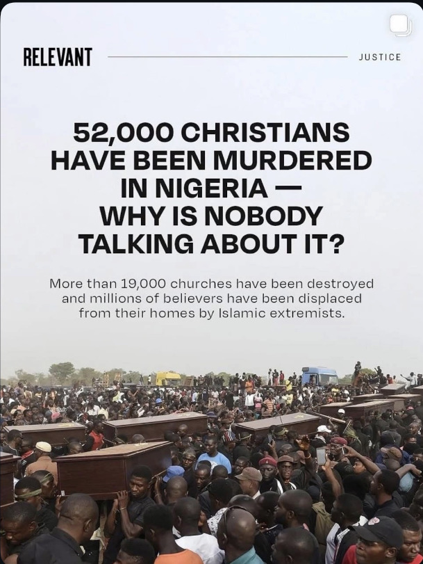
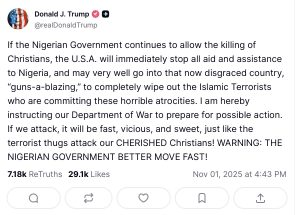
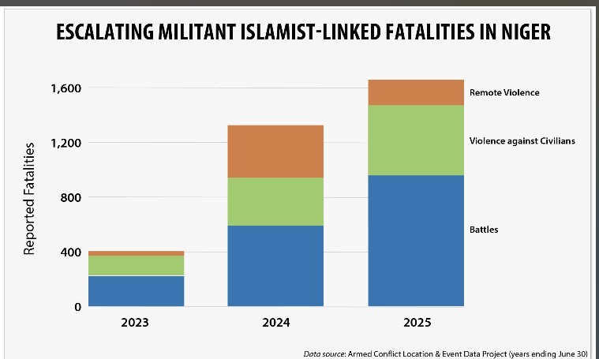

Nigeria is no stranger to religious violence. Recently newsoutlets have reported the mass killing of christians specifically in the north of Nigeria, claiming it's not being talked about enough.

The president of America, Donald Trump, even tweeted about the issue, threatening to take action against Nigerian and it's government if nothing is done.

The irony in this is the ignorance and intentional blind eye to muslims being killed in near equal amounts; Some reports count as much as 60,000 deaths, and yet the media in the past few weeks doesn't report this nearly as much as they do the christian deaths. Trump himself neglects to mention it, leading people to speculate about whether or not that was intentional amidst his recent mission to deport immigrants and his former islmaphobic behaviour.

Many nigerians recognise Trump's disingenous concern and speculate about what he stands to gain from intervening, however, due to misinformation and ignorance, there is still a large number of nigerians who consider Trump's threat a good thing; Critics claim that they have not taken into consideration what has happened to Nigeria in the past when the US or UK has intervened, nor do they acknowledge the American government formerly admitting to funding these terrorist groups.